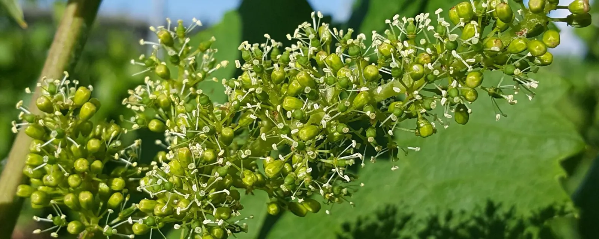
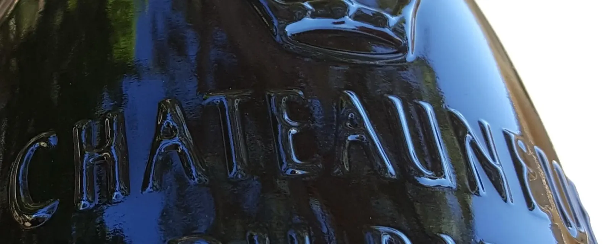
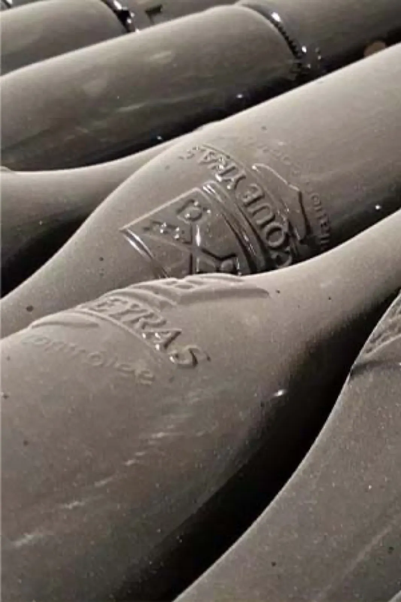
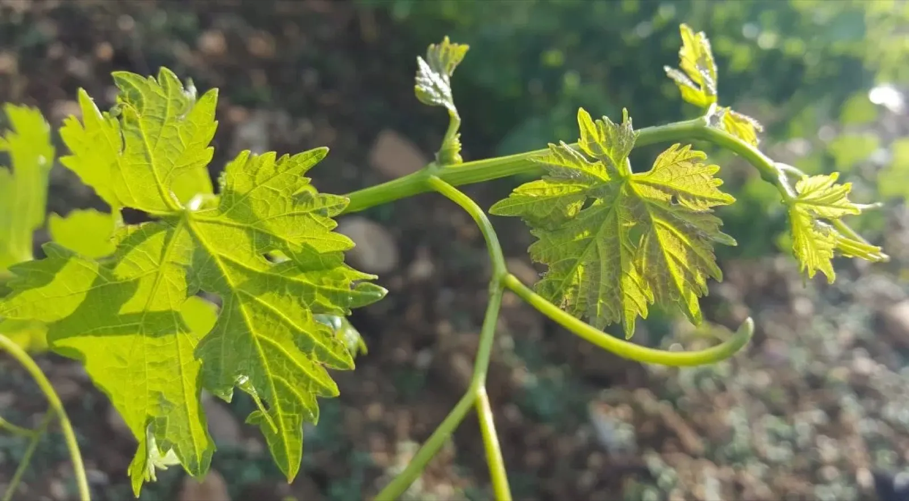
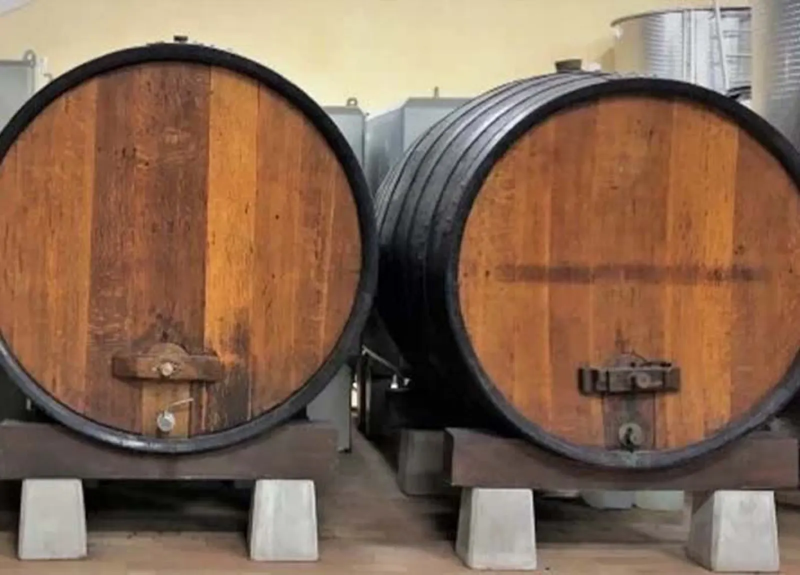
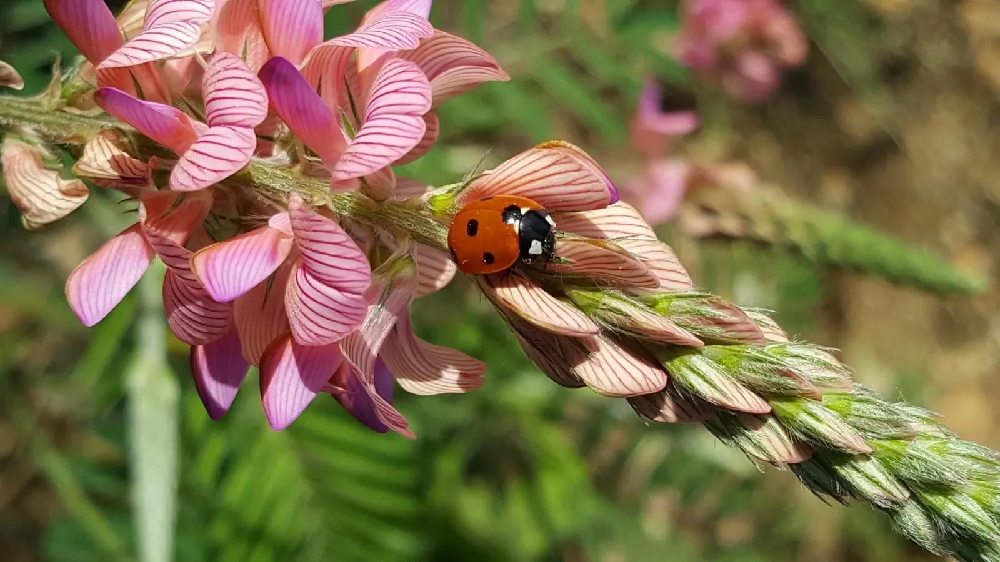
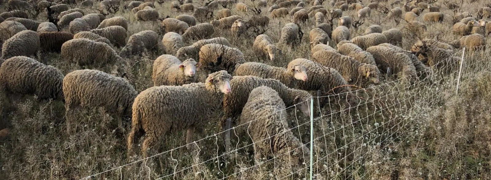
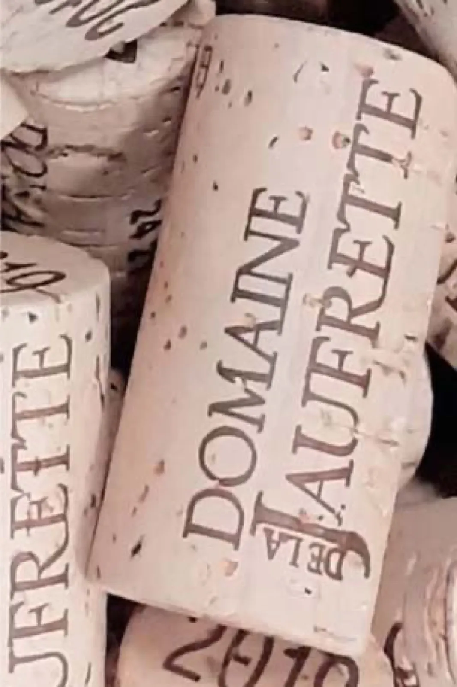

Vins bio d’Orange,
récoltés à la main
Vignerons indépendants depuis plusieurs générations, la famille Chastan cultive la vigne en agriculture biologique à Orange, aux portes d'Avignon, près de Châteauneuf-du-Pape, Gigondas et Vacqueyras.
- 1870la famille Chastan se tourne vers la vigne
- 1976première bouteille du domaine
- 4appellations de la Vallée du Rhône
- Bioconversion engagée en 2011
- 100 %des raisins récoltés à la main
Nos vins
Rouges, blancs et rosés issus de cépages choisis avec soin, récoltés à la main puis élevés avec patience, pour révéler la complexité des appellations du domaine.
- Châteauneuf-du-Pape
- Châteauneuf-du-Pape 2013
- Gigondas
- Gigondas 2013
- Vacqueyras
- Vacqueyras 2019
- Vacqueyras 2013
- Côtes du Rhône
- Rouge Harmonie 2023
- Côtes du Rhône 2021
- Blanc à la Cale 2024
- Rosé de saignée 2024


Le catalogue du domaine présente chaque vin, par gamme et par couleur, avec les exclusivités et les hors-séries.
Voir les fiches des vinsUne histoire de vigne et de famille depuis 1870
La famille Chastan cultive la terre depuis le XVIIIe siècle, et la vigne depuis les années 1870.
De génération en génération, le domaine s'est forgé une identité forte, entre tradition viticole et agriculture respectueuse. Il s'étend aujourd'hui sur quatre appellations : Châteauneuf-du-Pape, Gigondas, Vacqueyras et Côtes du Rhône.

- Années 1950
André et Paulette
Vignerons originaires de Gigondas et de Vacqueyras, ils s'installent à Orange pour développer un vignoble en Côtes du Rhône.
- Années 1970
Alain et Andrée
Ils fondent le Domaine de la Jaufrette, acquièrent des vignes en Châteauneuf-du-Pape et vendent leur première bouteille en 1976.
- Années 1990
Frédéric rejoint le domaine
Il a grandi au milieu des vignes, et en reprend la direction en 2010.
- 2011
Le choix du bio
Frédéric Chastan engage la conversion du domaine à l'agriculture biologique.
« Sublimez la nature pour en extraire la quintessence, dans le respect du terroir et en osmose avec les éléments. »
Vendanges à la main
Au moment juste, pour préserver l'intégrité du raisin.
Des rendements faibles
Inférieurs aux seuils des appellations, pour la concentration et la qualité du fruit.
Le temps de l'élevage
Les vins sont élevés en fût de chêne, puis affinés en cave pendant plusieurs années avant leur mise en vente.

Les foudres de la cave, à Orange.


Une coccinelle sur le sainfoinVenez déguster au domaine
Une dégustation commentée de nos cuvées bio, pour comprendre notre démarche et goûter l'âme de nos appellations.
Particuliers, groupes jusqu'à 20 personnes et professionnels sont reçus sur rendez-vous. Le domaine accueille aussi les visiteurs venus d'Avignon, de Carpentras et de Pernes-les-Fontaines.
Pensez à appeler avant de venir : le métier de vigneron nous conduit aussi dans les vignes et sur les salons.

Domaine de la Jaufrette
- Adresse
- 1394 chemin de la Gironde, 84100 Orange
- Horaires
- Du lundi au vendredi, de 8 h à 12 h et de 14 h à 18 h, de préférence sur rendez-vous
Le samedi sur rendez-vous - Téléphones
- 04 90 34 35 34
06 21 78 10 85 - Courriel
- domaine.jaufrette@hotmail.fr